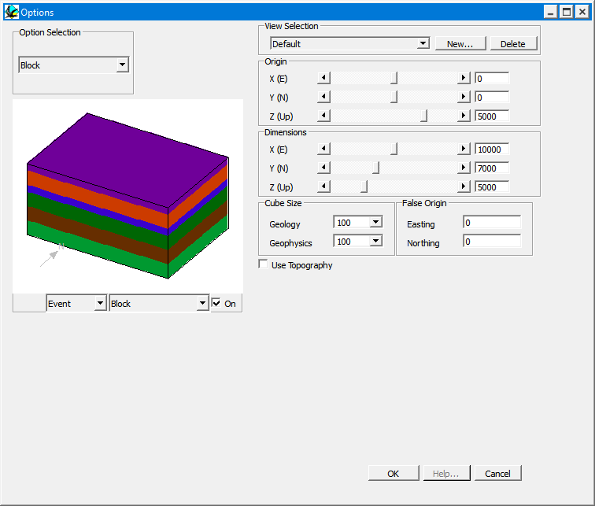
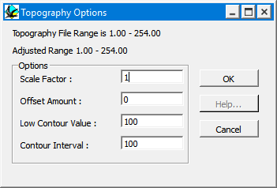

Block options

This window provides access to options which control the resolution, position and shape of geological and geophysical calculations.
Block View Options Window
| GROUP | NAME | FUNCTION |
|---|---|---|
| View Selection | Current | Menu of named sets of distinct block parameters |
| New... | Add new view to list | |
| Delete | Delete currently selected view from list | |
| Origin | X | X position of upper south west corner of block |
| Y | Y position of upper south west corner of block | |
| Z | Z position of upper south west corner of block | |
| Dimensions | X | X Dimension of Block in metres |
| Y | Y Dimension of Block in metres | |
| Z | Z Dimension of Block in metres | |
| Cube Size | Geology | Cube size for all geological visualisations |
| Geophysics | Cube size for all geophysical calculations | |
| False Origin | Easting | This value will be added to ERMapper and Geosoft format Easting (X) coordinates to provide allow real world coordinates to be used |
| Northing | This value will be added to ERMapper and Geosoft format Northing (Y) coordinates to provide allow real world coordinates to be used | |
| Use Topography | This check box causes a topography grid file to be loaded |
Topography Scaling Window
If the Use Topography button is checked, the Topography Scaling window will appear. This window allows the user to scale the topography file as it is loaded. This window may be accessed Use Topography check box in the Geology Options window.

| GROUP | NAME | FUNCTION |
|---|---|---|
| Options | Scale Factor | Gain for topography values |
| Offset Amount | Offset for topography values | |
| Low Contour Value | Lowest contour level for maps showing topographic contours | |
| Contour Interval | Contour interval for maps showing topographic contours |
In this section
Geology display optionsSection / borehole optionsMovie optionsVolume / surface optionsBlock diagram display typeWindow optionsProject options
Noddy · open source under the MIT licence · Loop3D/noddy_qt